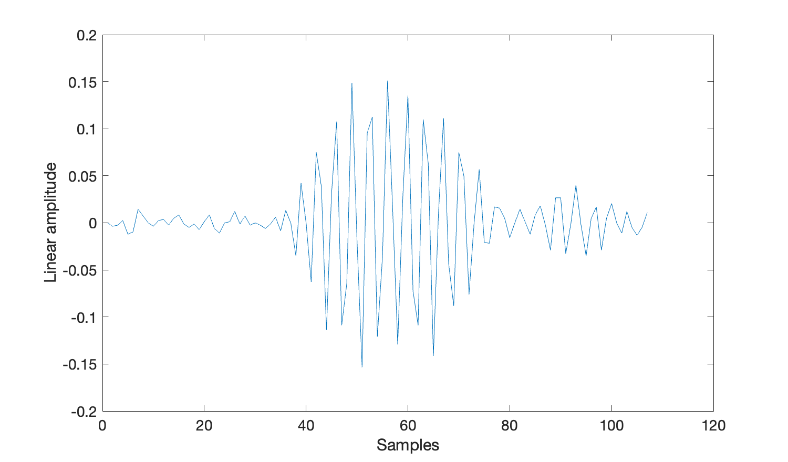

Processing PAMGuard Data Files
Introductions
Various modules in PAMGuard produce binary files. Custom libraries written in MATLAB, R and Python exist to help you further process these files. In this tutorial, we will process a folder of Click Detector binary files, count clicks per minute and create a concatenated string of porpoise detections.
NOTE ABOUT VERSIONS
This tutorial is for Windows users. If you use MacOS or any Linux distribution, you may still follow this tutorial but alter file paths accordingly.
INSTRUCTIONS ON INSTALLING THE SOFTWARE
Exercise 1: Open a Click Detector Binary File
For the first exercise of this tutorial, you will open a click detector binary file from the folder Data/porpoise_data/Binary/20130710/. This contains 26 files: thirteen data files (.pgdf) and thirteen index files (.pgdx). You will concern yourself solely with the thirteen data files (.pgdf). Select one of these files which you will open and process; then follow the instructions for your preferred programming language below.
Below, we use loadPamguardBinaryFile() to load the click file into a data array clicks and metadata object fileInfo. The clicks variable is an array of data elements (clicks) in the binary file.
To access elements from an array in MATLAB you must use curved brackets starting at index one (1), unlike most languages which use square backets from index zero [0].
[clicks, fileInfo] = loadPamguardBinaryFile("\enter\your\path\PamguardDevelopment\Binary\20120629\Click_Detector_Click_Detector_Clicks_20120629_094025.pgdf")
% get and print the first click
firstClick = clicks(1)
disp(firstClick)
% get and print startSample of the first click
firstClickStartSample = clicks(1).startSample
disp(firstClickStartSample)To check that the file you have loaded is correctly a click detector you can access the file
In R, we use loadPamguardBinaryFile() to load all contents of the processed data file into a single clickFile object. The clickFile$data attribute produces an array of data elements (clicks) in the binary file.
library(PamBinaries)
clickFile <- loadPamguardBinaryFile("\enter\your\path\PamguardDevelopment\Binary\20120629\Click_Detector_Click_Detector_Clicks_20120629_094025.pgdf")
clicks = clickFile$data
# get the first click
firstClick <- clicks[[0]]
print(firstClick)
# get startSample of the first click
firstClickStartSample <- clicks[[0]]$startSample
print(firstClickStartSample)In Python we use load_pamguard_binary_file() to load all contents of the processed data file into a single click_file object. The click_file.data attribute produces an array of all data elements (clicks) in the binary file.
In Python we use snake_case rather than camelCase (as used in MATLAB and R) to write out phrases such as variable and method names.
from pypamguard import load_pamguard_binary_file
click_file = load_pamguard_binary_file("\enter\your\path\PamguardDevelopment\Binary\20120629\Click_Detector_Click_Detector_Clicks_20120629_094025.pgdf")
clicks = click__file.data
// get the first click
first_click = clicks[0]
print(first_click)
// get startSample of the first click
first_click_start_sample = clicks[0].start_sample
print(first_click_start_sample)Exercise 2: Plotting Waveform Data
Now that we have loaded in the data files into a more workable data structure, we will plot the the waveform data of the first click. You can build off of the code from exercise 1.
Depending on how you set-up PAMGuard, the exact plots shown in this tutorial may not match those that you produce yourself. So long as you understand what the code is doing, this is not a problem.
MATLAB has an in-built method plot() that simplifies plotting the waveform data.
waveFormData=clicks(1).wave;
plot(waveFormData)Note that there may be more than one waveform in single click detection. This is because channels within the click detector can be grouped together. e.g. for a typical towed array survey where the two hydrophone elements within the towed array are close together, those two channels will be grouped- hence a single click detection would have two sets of waveform information, one for channel 0 and one for channel 1.

R has an in-built method plot() that simplifies plotting the waveform data. We need to create the x-axis manually by creating an array of integers x from 1 to the length of the waveform data. The use of the index [,1] cuts down a potential multi-channel waveform into a single-channel waveform of the lowest channel number.
wave = clicks[0]$wave[,1]
x <-1:length(aclick$wave[,1])
plot(x, aclick$wave[,1], type = "l", lty = 1, col="red")In Python the matplotlib library is required to plot data. The code below will plot all the waveform data from the first channel.
Import matplotlib using pip install matplotlib in the command line / terminal. If you do not have matplotlib installed the following code will not work for you.
import matplotlib.pyplot as plt
# code from previous exercise goes here
plt.plot(clicks[0].wave[0])
plt.savefig('plot.png')The code above will have saved the plot in a PNG file plot.png within your current working directory.
The code above plots the first channel from the waveform data of the click. A click may have one or more channels (clicks[0].wave is a 2-dimensional array, as such). You can write a for-loop, as shown below, to plot all the separate channels together. In the event that the click only has one channel, both code snippets shown in this exercise achieve the exact same thing.
import matplotlib.pyplot as plt
# code from previous exercise goes here
for chan in clicks[0].wave:
plt.plot(chan)
plt.savefig('plot.png')Exercise 3: Load a Folder of Click Files and Count the Classified Clicks
So far, we have opened one of the thirteen click files. In reality we want to deal with any number of files in a folder. In this exercise, we will read all thirteen binary files at once and count the number of classified clicks.
clicks[0] is considered a classified click when clicks[0].type == 1.
Method 1: loading files individually into memory (recommended)
First, create an array of the files within your desired folder. The folder that you should load is the same of that which contained the click file in exercise 1. When we use the fullFile() method we pass in a file name mask *.pgdf to filter the files to only those with a .pgdf extension.
folderName = '/path/to/Data/porpoise_data/Binary/';
binaryFiles = dir(fullFile(folderName, '*.pgdf'));The variable binaryFiles is an array of MATLAB structures, each of which contains information about a file in the folder. This allows us to open up the files one-at-a-time to prevent excessive memory usage.
Now we must create a for loop to go through each of the files in binaryFiles, and load them in using loadPamguardBinaryFile() (as in exercises 1 and 2).
for i = 1:length(binaryFiles)
filePath = fullFile(folderName, binaryFiles(i).name);
clicks = loadPamguardBinaryFile(filePath);
endThis code achieves very little. Each time we load one of the files, it is almost immediately dumped from memory as the loop enters its next iteration - no useful information is produced.
Now we will use a nested loop to count the number of porpoise clicks there exist in all thirteen data files in the folder. We use a technique called nested looping here to increment a global counter. The outer loop (where i is incremented) goes through all the files, and the inner loop (where j is incremented) goes through all the clicks in each file to check whether they are classified or not.
count = 0;
for i = 1:length(binaryFiles)
filePath = fullFile(folderName, binaryFiles(i).name);
clicks = loadPamguardBinaryFile(filePath);
for j = 1:length(clicks)
if (clicks(j).type == 1)
count = count + 1
end
end
endFirst, create an array of the files within your desired folder. The folder that you should load is the same of that which contained the click file in exercise 1. We use the in-built method list.files() with a pattern \\.pgdf$ to mask the files.
folderName = '/path/to/Data/porpoise_data/Binary/';
fileNames <- list.files(folderName, pattern = "\\.pgdf$")The variable fileNames is an array of file names (as strings). This allows us to open up the files one-at-a-time to prevent excessive memory usage.
Now we must create a for-loop to go through each of the files represented by file names in fileNames, and load them in using loadPamguardBinaryFile() (as in exercises 1 and 2).
for (fileName in fileNames) {
# load each click file.
clicks <- loadPamguardBinaryFile(file.path(folder, fileName));
}This code achieves very little. Each time we load one of the files, it is almost immediately dumped from memory as the loop enters its next iteration - no useful information is produced.
Now we will use a nested loop to count the number of porpoise clicks there exist in all thirteen data files in the folder. We use a technique called nested looping here to increment a global counter. The outer loop goes through all the files, and the inner loop goes through all the clicks in each file to check whether they are classified or not.
count = 0;
for (fileName in fileNames) {
# load each click file.
clicks <- loadPamguardBinaryFile(file.path(folder, fileName));
# iterate through the click files to count the classified clicks.
for (click in clicks$data) {
if (click$type == 1) {
count = count + 1;
}
}
}First, create an array of the files within your desired folder. The folder that you should load is the same of that which contained the click file in exercise 1. We use the native Python library pathlib to list all files within a folder (using the Path class), and mark them using the mask *.pgdf.
import pathlib, pypamguard
folder_name = '../Data/porpoise_data/Binary/20130710'
file_names = pathlib.Path(folder_name).glob('*.pgdf')The variable file_names is an array of file names (as strings). This allows us to open up the files one-at-a-time to prevent excessive memory usage.
Now we must create a for-loop to go through each of the files in file_names, and load them in using load_pamguard_binary_file() (as in exercises 1 and 2).
# code to create file_names variable goes here
for file_name in file_names:
clicks = pypamguard.load_pamguard_binary_file(pathlib.Path(file_name))This code achieves very little. Each time we load one of the files, it is almost immediately dumped from memory as the loop enters its next iteration - no useful information is produced.
Now we will use a nested loop to count the number of porpoise clicks there exist in all thirteen data files in the folder. We use a technique called nested looping here to increment a global counter. The outer loop goes through all the files, and the inner loop goes through all the clicks in each file to check whether they are classified or not.
# code to create file_names variable goes here
count = 0
for file_name in file_names:
clicks = pypamguard.load_pamguard_binary_file(pathlib.Path(file_name))
for click in clicks.data:
if click.type == 1:
count += 1Method 2: loading all data into memory at once (memory intensive)
Each library has a function you can use to load all the files in a folder into memory at once. This can offer simplicity with respect to the nested loops you wrote above as you would no longer be responsible for looping through the individual files in the folder you wish to read.
The method to load all files in the folder into memory at once places a heavy burden on your computer’s memory. Only use this function if you are processing a small number of files, or are pre-filtering them significantly (we do not cover that in this tutorial).
folderName = '/path/to/Data/porpoise_data/Binary/';
clicksAll = loadPamguardBinaryFolder(folderName);
count = 0
for i = 1:length(clicksAll)
if (clicksAll(i).type == 1)
count = count + 1
end
endfolderName = '/path/to/Data/porpoise_data/Binary/';
clicksAll = loadPamguardBinaryFolder(folderName)
count = 0;
for (click in clicksAll$data) {
if (click$type == 1) {
count = count + 1;
}
}import pypamguard
folder_name = '../Data/porpoise_data/Binary/20130710'
clicks_all = pypamguard.load_pamguard_binary_folder(folder_name)
count = 0
for click in clicks_all.data:
if click.type == 1:
count += 1